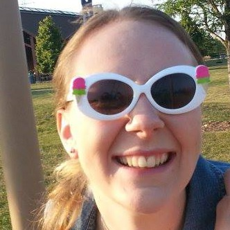
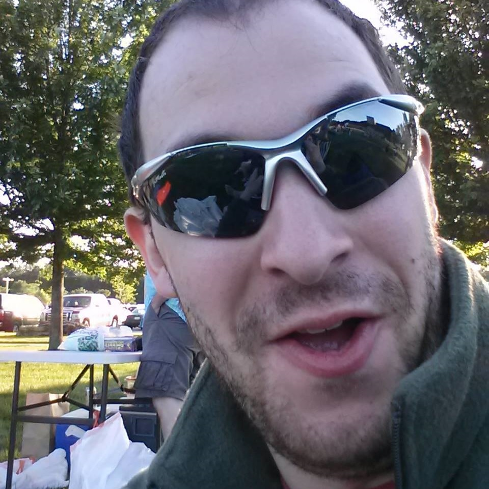

-
The Bride
Lisa Ellis
Lisa recently graduated from Milwaukee School of Engineering, where she earned her BSN and psychology minor. Lisa works at Froedert in the Spinal Cord Injury Unit. She continues in the traditions of her family to volunteer, like at St. Margaret Mary's fish fry, where she met David.
Lisa loves running, keeping busy, and following the two P's (People Magazine and Pinterest). Her main hobbies consist of school, work, and planning this wedding. Her favorite shows include Law and Order: SVU, The Bachelor, Downton Abbey, and House of Cards. Fun fact: Lisa is obsessed with pickles. Like really.
-
The Groom
David Zampino
David happily works for the City of Milwaukee in IT support. In addition, he has a consulting firm, Zam.py Tech, where his love for computers and technology helps small businesses. Evenentually he would like to continue his schooling for computer engineering.
David spends his free time cooking, expirementing with his home lab, and enjoying a wide variety of video games. Against his better judgement, he picked up running so that he could do it with his fiancée, a former cross-country runner, and can be seen around Milwaukee and Wauwatosa running by himself. Fun fact: he created this website.
-
The Story
David had brushed into Lisa before while she had been working for a fish fry at the local church, St. Margaret Mary. But it was not until Lisa's 21st birthday that he really got a chance to meet her. David, who had been dj'ing for this particular fish fry, was approached by Lisa's mother to get him to record a video of the fish fry people singing happy birthday, since she could not be there that night. Lisa actually did end up showing up and was moved by David's kindness, but could not help but laugh that while he was singing happy birthday, he did not know her name. She still reminds him of this.
Lisa eventually decided to message David on Facebook, and they ended up chatting until the wee morning hours. Within a week, they were dating. Their first date was a memerable one. Both were obviously nervous and dressed up nicely for a Mexican restaraunt that had been recommended to them. If you have ever been to Conjito's Place (just south of the Third Ward), you'll know how this story goes. We entered on the bar side and immediately Lisa gave David a look. We were seated at a table that barely fit one, and the food came out on paper plates. Thanks to a half-pitcher of margaritas and simply amazing food, it ended up being a wonderful night. Together, they spent the next year falling in love.
At 11:11 you make a wish. Doesn't matter where you are or what you're doing, you make a wish. Lisa would remind David daily about this, usually via text, and this went on for months. And months. On one fateful day in the middle of July, David left work early, knowing the Lisa had the day off, pleasantly surprising her under the guise of an afternoon date. Little did she know that he was (very nervously) carrying a little rock that would change her life. They watched a movie together, ate a wonderful homemade Italian dinner, and went off on an after-dinner walk, off there normal route to the Mount Mary University campus across the street. David had cleverly poorly tied his shoe before going off and sure enough, in the middle of the courtyard it needed tying. Now from Lisa's perspective, here was her boyfriend, early twenties, on one knee tying his shoe. Like an old man. David looked up with a sparkle between his thumb and finger and asked, "Did you make your wish this morning? Will you make mine come true?"
Fun fact: she did.